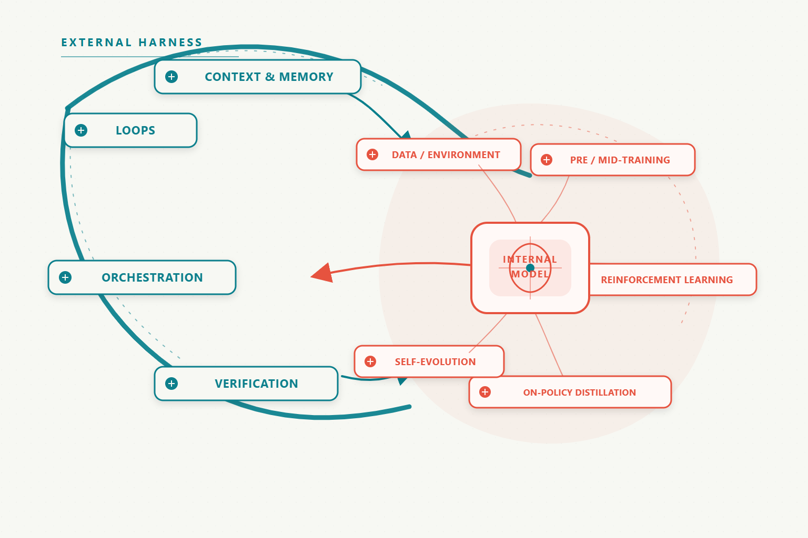

External
Loops, context, orchestration, and verification live in the runtime around model weights.
System thesis
A long-horizon agent is a coupled system: runtime scaffolding stores context, routes work, and verifies outcomes while the model learns capability into its weights.

Choose a layer or thread to filter the index
20 articles
Try a broader query or clear the topic filter.
One deliberate route
Start with the runtime loop, move through memory and orchestration, then follow the training and self-evolution work that changes the model itself.
Curation protocol
Loops, context, orchestration, and verification live in the runtime around model weights.
Data, training, reinforcement, distillation, and self-evolution move capability into the policy.
Within every research thread, entries are ordered by the original publication month.
S marks field-defining work; A marks primary technical sources; B marks rigorous independent writing.